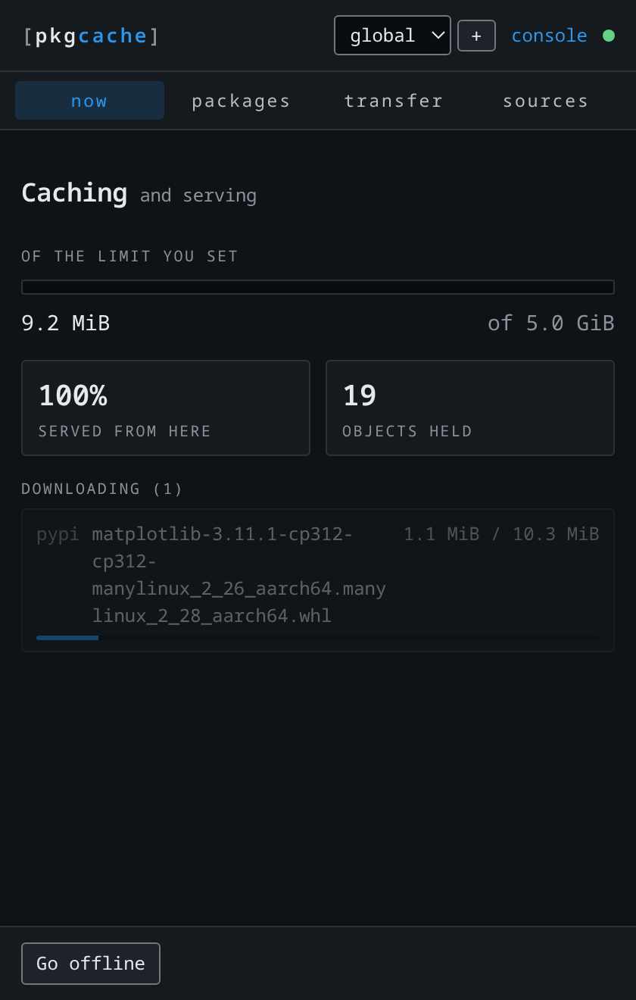

pkgcache keeps every package this machine has already downloaded and serves it
back from disk. The installer sets it up and opens a window that shows what it
is doing. There is a command line too, and you never have to touch it.
Naming the desktop package pulls the daemon in with it. On a server, install
pkgcache alone — no graphics stack.
macOS
Double-click the .pkg
sudo installer -pkg pkgcache-*.pkg -target /
Unsigned for now, so Gatekeeper refuses a double-click: right-click, Open,
confirm. The command above skips that.
Windows
Run the installer
.\pkgcache-1.0.0-setup.exe
SmartScreen warns on an unsigned build: More info, then
Run anyway.
Or take a binary: one static file, nothing to install, which is what a CI runner
or a container image wants.
from GitHub releases
Files
not checked
This list is built from the GitHub releases API when the page loads. Without
it — or before the first release exists — the
releases page
is the place to look; every file named on this page comes from there.
Verify before you run. Every release ships SHA256SUMS. Check
with sha256sum --ignore-missing -c SHA256SUMS, or
shasum -a 256 --ignore-missing -c SHA256SUMS on macOS — worth the ten
seconds on an unsigned build, where nothing else vouches for the bytes.
Took the bare binary? Two commands and you are level with the installers:
chmod +x pkgcache-linux-amd64 && sudo install -m 0755 pkgcache-linux-amd64 /usr/local/bin/pkgcache,
then pkgcache setup -limit 25G. The budget is the one thing pkgcache
will not start without.
what you look at
The app.
The installers put a window and a status-bar item on the machine and start them at
login. They watch the cache that is already running — you do not launch the cache,
it starts itself when something asks for a package and sleeps when nothing does.

A first request. Fetched once, kept, and shown while it is happening.
Every request after.local hit means it never left the
machine.
What it shows you
Whether it is still caching, and the banner when a full cache has stopped storing.
How much of your disk budget is gone.
How much is being served from here instead of fetched.
What was just asked for, as it arrives.
Four tabs: now is the one above. packages is what is
held, transfer is checkpoints and packs, sources is
the chain behind the cache. Go offline serves what is held and
stops reaching upstream — the fastest way to find out what a build really needs.
Where to find it
Linux — an app-menu entry called pkgcache.
macOS — /Applications/pkgcache.app, opened by the installer as it finishes.
Windows — a Start-menu shortcut under pkgcache.
It starts with your session on Linux and macOS. To stop that:
pkgcache-app --off-login
On Debian and Ubuntu the app is the pkgcache-desktop package, kept
separate so a server carries no graphics stack. It pins the daemon's exact
version, because two halves of one product drifting apart is a bug report
nobody can read.
Installed the binary only? pkgcache widget opens the window,
pkgcache tray the status-bar item, and
pkgcache console the full view in your browser — same three
surfaces, from a terminal.
when you want it
The terminal does the things a window cannot.
The app watches. The command line points tools at the cache, drives Docker, moves
a cache to a machine with no network, and answers in a script. Pick what you need;
none of it is required to have a working cache.
Run one command through it
pkgcache run -- pip install numpy
pkgcache run -- npm ci
Sets the variables the tools read, runs the command, puts the environment
back. Nothing is written to your project or your home directory.
Or a whole shell
pkgcache shell
pkgcache env
shell is a child shell with everything pointed at the cache;
exit leaves it. env prints the same settings for a
shell that has to keep them, and pkgcache persist makes them
survive a reboot.
Inside either one, the commands are the ones you already type:
Python
pip and uv
pip install numpy
Node
npm, yarn, pnpm
npm ci
Source
Git
The URL does not change. Submodules follow.
git clone https://github.com/pallets/click.git
System
apt and apk
Here sudo is for the package manager, not for pkgcache.
Name what a project holds, write it to a file, carry it, import it. A second
trip carries only what is new. pkgcache rollback returns to a
name; pkgcache project lists and switches them.
Do not add TLS workarounds. No --trusted-host, no
--insecure, no CA path. The cache answers plain HTTP on your own
loopback interface, so those flags remove a check that was never in the way. A
certificate error means something else is being talked to.
step 4
Docker plays by different rules.
Docker is a separate daemon, often in a virtual machine with its own idea of
localhost, so it cannot read your shell. pkgcache drives it for you
instead of asking you to configure it.
A
Pull an image, keeping its name
A pull through a cache normally means retagging: you ask for
127.0.0.1:41780/dockerhub/library/python:3.12-slim and live with
an image whose name is an address. pkgcache pull fetches through
the cache and then gives you back the name you asked for.
Any registry works by naming it — ghcr.io, quay.io,
nvcr.io, gcr.io — with nothing configured first.
B
Build an image
pkgcache build takes the same arguments docker build
does. It rewrites a copy of your Dockerfile in memory and hands that to
docker on stdin; the file on disk is never touched.
Build arguments for the tools that read them — PIP_INDEX_URL, UV_DEFAULT_INDEX, NPM_CONFIG_REGISTRY, the Git ones, and http_proxy for apt and apk. ARG, never ENV: an image that ships someone's laptop address is broken the moment it leaves that laptop.
FROM lines, for any registry the reference names. A registry only this machine can reach — localhost:5000, an address, a host:port on the build network — is left alone, because it means something different where the cache runs.
The # syntax= directive, which names the frontend BuildKit parses the file with and is fetched before the first instruction is read. A build whose every FROM came from the cache would otherwise still go to Docker Hub for that one, first.
A borrowed image — COPY --from=ghcr.io/astral-sh/uv:0.10.8 or a mount's from=. A stage name or a stage index is left alone; it has no registry to be fetched from.
One RUN, only in a stage that runs apk, moving its repositories to plain HTTP so the proxy can see them — and putting them back before the stage ends.
pkgcache build -print .
Prints the rewritten Dockerfile and every substitution, and builds nothing. Worth running once on a Dockerfile you know well.
C
Builds you start some other way
A Makefile, an IDE, a CI script, docker compose up — anything
that calls docker itself cannot be wrapped. Two one-time commands cover
those.
pkgcache docker-setup
pkgcache docker-build-setup
The first teaches the Docker daemon about this cache, so
docker pull against it works from anywhere on the machine; add
-mirror and even an unmodified docker pull python:3.12
is served from the cache, which is off by default because it reroutes every
pull on the machine. The second sends apt and apk
through the cache in every build on this machine, whoever started it.
Docker Desktop, and any remote builder. On macOS and Windows the daemon
lives in a VM where 127.0.0.1 is not your machine, and a
RUN step is in its own network namespace even on Linux.
pkgcache build works out an address the daemon can actually dial and
passes it in, which is why it is a wrapper rather than a page of instructions.
step 5 — optional
Put your team's pkgreg behind it.
A team cache is pkgreg — the same engine, run as a host other machines
point at. Tell pkgcache about it once and a package this machine has never seen is
asked of the team before the internet. Your commands do not change.
your team cache
Paste the address you were given and every command on this page will use it.
It is remembered in this browser and sent nowhere.
examples use the placeholder address
1
Get the fingerprint from whoever runs it
A team cache serves TLS from its own CA. pkgcache fetches that CA over an
unverified connection and then refuses it unless it matches a fingerprint
you were given separately — which is exactly the check that would catch
someone impersonating the cache, so it is the one thing you cannot skip. Ask
for it over a channel you trust; it looks like
AA:BB:CC:….
That is the whole change. It writes two ordinary upstream rows per index —
the team at priority 10, the public registry at 20 — and the engine walks
the chain it already knew how to walk.
Have the CA file itself instead of a fingerprint? -ca-file ./ca.crt takes it and derives the fingerprint from it.
3
Check the chain
pkgcache status
All three tiers for the current project, with the team cache probed — so one
that has been down for a week shows as down, rather than as "builds got
slower".
What happens when the team cache is unreachable
The next origin is tried: on a connection refused, a DNS failure, a timeout or
a 5xx. Deliberately not on a 404 — that is what a cache in offline mode
answers, and falling through would defeat it — and not on a 401 or 403, which
is a credential problem that going around would hide.
Never fetch from the internet myself
-no-direct omits the public row entirely, so this machine reaches
upstream only through the team. It holds even for a registry nobody
configured, because a discovered registry is chained through the team's own
/v2 root.
pkgcache setup -no-direct
Projects, a client with no local cache, and undoing it
One project at a time
-project work configures the chain for one of this machine's
projects, and -team-project names the project on the team's side —
which defaults to their global project, because assuming a name exists on
somebody else's server is not this program's call. A project with no
configuration of its own inherits the global one, and
pkgcache project ls marks an inherited chain with *.
pkgcache setup -project work -server https://cache.example.com:8443 -ca-sha256 "PASTE_FINGERPRINT" -team-project platform
A pure client, with no cache of its own
-no-cache is the old pkgreg-client exactly: a verified
loopback bridge to the team cache, with nothing stored locally. Nothing is
written to the cache directory and no database is opened. Use it on a shared
host, or where the disk is not yours to spend.
Removes the team cache and its chain, including the CA that came with it. Your local cache and everything in it stay.
pkgcache setup -uninstall
Chained ecosystems are pypi, npm and OCI. apt and Git work out their origin
from the request itself rather than from configuration, and files has
no upstream at all — its content arrives by upload. Those three are absent from the
chain rather than half-supported.
troubleshooting
When something does not work.
a disk budget is required
pkgcache will not start without one, on purpose. Run
pkgcache setup -limit 25G, or
pkgcache limit none if you really do want it unbounded.
CA fingerprint mismatch
The certificate the team cache served does not match the value you passed.
Stop and confirm the fingerprint with whoever runs it, over a channel you
trust. This is the check that would catch an impersonated cache, so do not
work around it.
server must use https
A team cache is only accepted over HTTPS. An http:// address means
the instance has no certificate pair yet — that is a fix on their side, not a
flag on yours.
A tool ignores the cache and goes upstream
It is not reading the environment. Check with pkgcache env, and
remember that a tool started outside pkgcache run or
pkgcache shell — an IDE, a daemon, a login shell opened earlier —
has the old environment. pkgcache persist is the answer for the
ones you cannot wrap.
connection refused inside docker build
A RUN step runs in its own network namespace, where
127.0.0.1 is the build container and not your machine. Use
pkgcache build, which works out an address the daemon can dial
rather than assuming loopback.
A FROM line was not rewritten
Run pkgcache build -print . — every substitution is printed, and a
line that was left alone was left alone for a reason: a variable in the image
name, an image this machine already has locally, or a registry only this
machine can reach.
It filled up
Nothing is ever deleted without your say-so. pkgcache prune
reclaims space when you ask; pkgcache limit changes the ceiling;
-min-free keeps a floor of free disk underneath it.
How do I undo all of this?
pkgcache setup -uninstall forgets a team cache.
pkgcache stop stops the daemon. Beyond that, deleting the cache
directory is the uninstall — nothing was written anywhere else. On macOS the
.pkg also installs pkgcache-uninstall, which removes
the bundle, the symlinks and the login item.